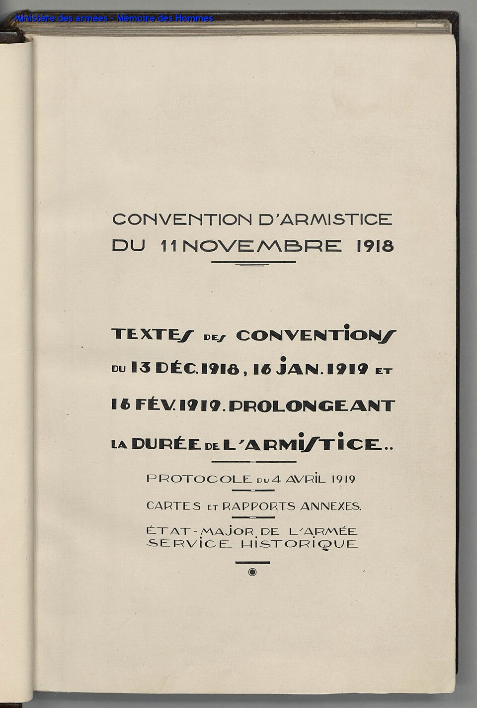

¡Armisticio! A la hora once del día once del mes once, callaron los cañones
Alemania firmó de madrugada, en un vagón de tren en el bosque de Compiègne, el armisticio que pone fin a cincuenta y dos meses de la guerra más mortífera que conoció el género humano. Las campanas de París, Londres y Roma repican desde la mañana.

A las cinco y diez de esta madrugada, en el vagón de mando del mariscal Foch detenido en un claro del bosque de Compiègne, los delegados alemanes firmaron el armisticio; a las once en punto, con simetría de calendario que parece obra de un poeta cansado, cesó el fuego en todo el frente occidental. Los partes cuentan que en los últimos minutos todavía se moría, y que luego cayó sobre las trincheras un silencio tan enorme que los soldados no sabían qué hacer con él. Algunos vitorearon; los más, escriben los corresponsales, se quedaron quietos, escuchando ese vacío donde durante cuatro años vivió el trueno.
París no tuvo esas dudas: la ciudad entera está en la calle desde media mañana, colgada de los cañones capturados, cantando la Marsellesa bajo una nevada de papeles, y lo mismo Londres, Roma y Nueva York. Alemania, en cambio, firma vencida y hambreada, con su flota amotinada, su káiser huido a Holanda anteayer y una república de dos días proclamada desde un balcón de Berlín. Las condiciones son duras y el armisticio es solo eso, un alto: la paz verdadera deberá escribirse en los meses que vienen, en Versalles, y de esa pluma dependerá que este final sea un cimiento o apenas un entreacto.
El desenlace se precipitó en cien días. La gran apuesta alemana de la primavera, lanzada antes de que llegaran los americanos en masa, ganó kilómetros y perdió la guerra: cuando se agotó, los aliados contraatacaron desde agosto sin conceder respiro, con tanques por centenares y tropas frescas desembarcando de a decenas de miles por semana. Después cayeron los puntales: Bulgaria en septiembre, Turquía y el imperio austrohúngaro en octubre, deshecho este último en repúblicas que todavía no tienen ni nombre asentado. Alemania pidió el armisticio invocando los catorce puntos del presidente Wilson, que hablan de una paz sin vencedores; las condiciones firmadas hoy —la flota entregada, la artillería rendida, el Rin ocupado— hablan otro idioma.
La aritmética de la última mañana avergüenza a la especie: sabiéndose la hora del alto el fuego desde la madrugada, hubo mandos que ordenaron atacar hasta el minuto final, y se murió a las 10:58 —un soldado canadiense, en Mons, donde la guerra británica había empezado— y a las 10:59. En París, los mutilados miraban el jolgorio desde los bancos con una seriedad que los cronistas no supieron esquivar, y entre la multitud que cantaba, una de cada tres mujeres vestía de negro. La noticia corrió por el planeta a la velocidad nueva de la telegrafía sin hilos, y en Buenos Aires, adonde el cable llegó temprano, el centro se llenó de banderas aliadas antes de la tarde.
La cuenta espanta a los propios vencedores: se habla de diez millones de soldados muertos y de dos generaciones seccionadas, sin contar la peste de influenza que ahora recorre el mundo cebándose en los mismos jóvenes que las balas perdonaron. «La guerra que terminará con todas las guerras», la llamó un escritor al empezar; ojalá el porvenir no lea esa frase con amargura. Hoy, al menos, los hombres pueden levantar la cabeza de la trinchera sin morir por ello. Que la undécima hora del undécimo día del undécimo mes quede grabada en los relojes de todos los pueblos, y que ningún reloj tenga que aprender otra fecha semejante.